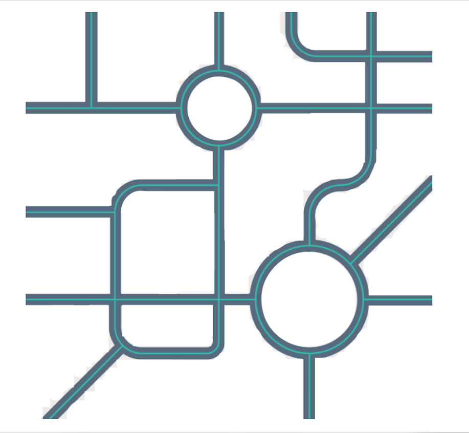

Touchpoint logging
QR or link entry at the point of contact. Anonymous token ID created. No duplicate record, no extra admin burden.
OTOS logs handoffs, generates transition receipts, monitors continuity touchpoints, and surfaces early drift signals for human review. The clinical action stays with the service. OTOS holds the thread.

QR or link entry at the point of contact. Anonymous token ID created. No duplicate record, no extra admin burden.
Handoffs become visible and auditable. Services can see whether the next step has actually landed.
Silence, stalled callbacks, and missed next-steps surface earlier as governance-safe continuity signals.
OTOS never decides care. Clinicians and partner teams remain responsible for any action, outreach or escalation.
Whoever they meet first can register the thread in seconds — name optional, continuity not.